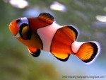

Fish
A fish is any member of a paraphyletic group of organisms that consist of all gill-bearing aquatic craniate animals that lack limbs with digits. Included in this definition are the living hagfish, lampreys, and cartilaginous and bony fish, as well as various extinct related groups. Most fish are ectothermic ("cold-blooded"), allowing their body temperatures to vary as ambient temperatures change, though some of the large active swimmers like white shark and tuna can hold a higher core temperature.[1][2] Fish are abundant in most bodies of water. They can be found in nearly all aquatic environments, from high mountain streams (e.g., char and gudgeon) to the abyssal and even hadal depths of the deepest oceans (e.g., gulpers and anglerfish). At 32,000 species, fish exhibit greater species diversity than any other group of vertebrates.
Fish are an important resource for humans worldwide, especially as food. Commercial and subsistence fishers hunt fish in wild fisheries (see fishing) or farm them in ponds or in cages in the ocean (see aquaculture). They are also caught by recreational fishers, kept as pets, raised by fishkeepers, and exhibited in public aquaria. Fish have had a role in culture through the ages, serving as deities, religious symbols, and as the subjects of art, books and movies.